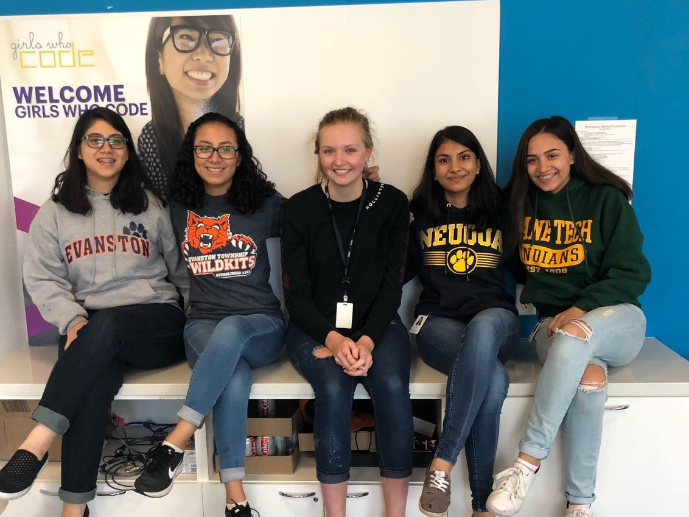

1 / 3

2 / 3

3 / 3

We're students, designers, dreamers, programmers, and so much more. As members of the Girls Who Code
summer immersion program, we have spent a substantial amount of time perfecting our site to be tailored for every student
with different preferences and needs. As students ourselves, we understand what is significant to students in the
college research and application process. Our website is designed to take the college setting, region, school type, and population
into consideration and give students college results that they'll be satisfied with.

Created in July 2018, our website is dedicated to helping students feel more confident
about
their college choices. The college application and decision process can be stressful, and as students
ourselves, we understand how stressful it can be. Thanks to our website, students can now take a short
(less than 15 minute)
quiz and relax while MyCollegeWingman does all the college research for you!

Developer
Diane is a 17 year old who was born in El Salvador but grew up in Evanston, IL. She is a rising senior at Evanston Township High School and her favorite subjects in school are math and science because even though some of the hardest problems frustrate her, she knows that there is always a solution. Outside of the classroom, Diane has joined many clubs including SHPE Jr, Team ASAP, WiSTEM, Students Without Borders Club, and the Cross Country Team. During her free time, Diane likes to hang out with friends, run, and read, and she spends a lot of time in bookstores and coffee shops. She hopes to go to college, hopefully MIT, and earn a degree in Computer Science.
Contact: dianeba3@gmail.com
Developer
Aashna is from Naperville, Illinois and is a senior at Neuqua Valley High School. Her dream school is Stanford University. Girls who code taught her how to code in different languages that include python and javascript and built off the foundation formed when she learned java in school. She has been involved in many organizations at her school such as Youth in Government and DECA, and has been on the executive board for the latter organization. After she graduates high school Aashna wants to pursue degrees in Computer Science and Electrical Engineering. She started coding when she first took Computer Science through school in which she learned java.
Contact: aashnavmehta@gmail.com
Developer
Victoria is from Chicago and a rising junior at Lane Tech College Prep. Her dream college to attend is the University of Illinois at Urbana-Champaign. Girls Who Code has helped prepare Victoria for future coding jobs, along with the coding for this website. Victoria was first introduced to computer science when she tried to hack Poptropica. In her free time, she enjoys drawing on her art tablet, listening to music, and teaching herself how to code. In the future, she hopes to persue a computer science degree and continuously learn more and more. Computer science and visual arts are her strong suits, which is why her goal is to combine both skills into one dream career.
Contact: victoria9339@gmail.com
Developer
Maggie is a rising senior attending Amos Alonzo Stagg High School and lives in Palos Park, Illinois. Her dream college is Johns Hopkins University. Addicted to coffee and herbal tea, she surrounds herself with Netflix; books; knowledge through various AP classes, textbooks, and teachers; her friends; and her family. Considering she wants to become a doctor by majoring in BioMedical Engineering, it does not come as a surprise that her favorite classes are Ap Bio, Honors Anatomy and Physiology, and AP Calc BC. Her most notable extracurriculars include 15 years of Polish School, the Northwestern Discovery Program, Student Council, Club Med, and lastly, Girls Who Code. Girls Who Code opened Maggie’s eyes to the innovative world of technology, and how to create your own little versions of technology through programming. She hopes to combine what she has learned in Girls Who Code with future classes to improve the world.
Contact: kasprzakmaggie@gmail.com
Developer
Priscilla is a junior at Lane Tech College Prep in Chicago, Illinois. She is passionate for video games, donuts, books, and memes. She was first introduced to Computer Science when she tinkered with Unity to create 3D video games. Priscilla is currently involved in several activities in and outside of school, including Ruckus Teens, Rugby, Girls Who Code, and Academic Decathlon. Girls Who Code has taught Priscilla essential skills in programming, such as Python, HTML, CSS, and Javascript. After graduating high school, Priscilla plans on attending University of Denver or Carnegie Mellon.
Contact: priscilagunas@gmail.com